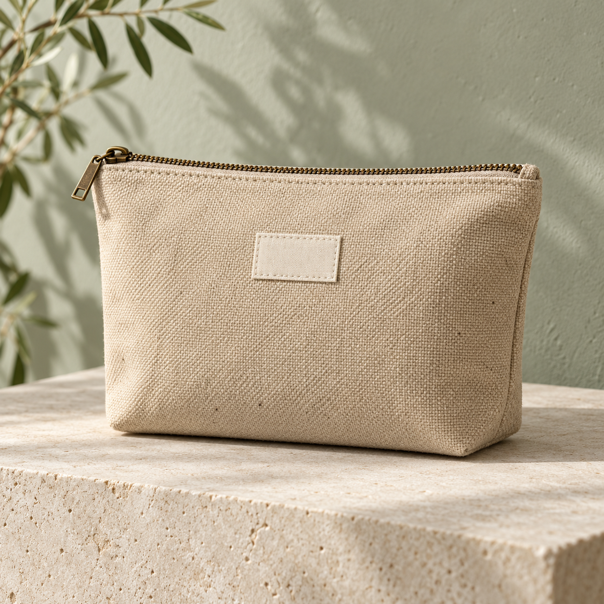

คัดวัสดุ
เศษผ้าสะอาดจากโรงงาน F01
ล็อต M01 • พร้อมใช้ตัวอย่าง 169 กก.
วัสดุที่โรงงานไม่ได้ใช้ อาจเป็นดีไซน์ชิ้นโปรดของคุณ
ดีไซน์ที่ใช้ได้ทุกวัน พร้อมออกแบบสำหรับแบรนด์ของคุณ
วัสดุแต่ละล็อตมีจำนวนจำกัด
เลือกชิ้นที่ชอบ แล้วปรับให้เป็นของคุณ
ภาพจำลองสินค้า • ราคาและปริมาณวัสดุเป็นข้อมูลตัวอย่างสำหรับทดลองสั่งซื้อ

SMALL THINGS. MEANINGFUL CHANGE.สำหรับโรงแรม คาเฟ่ และองค์กรที่อยากมอบของใช้ที่มีความหมาย เปลี่ยนวัสดุเหลือใช้ให้เป็นของขวัญที่ใช้งานต่อได้ทุกวัน พร้อมข้อความในแบบของคุณ
RE:FORM จับคู่เศษวัสดุที่ผ่านการคัดคุณภาพกับ Maker ให้กลายเป็นสินค้าที่มีคุณค่า ผลิตเท่าที่ต้องการ และบอกที่มาได้ทุกชิ้น
เศษผ้าสะอาดจากโรงงาน F01
ล็อต M01 • พร้อมใช้ตัวอย่าง 169 กก.
คุณเลือกสี จำนวน และข้อความ
Maker MK01 ผลิตตามคำสั่งซื้อ
ทุก 1 กก. ที่ใช้ซ้ำ รับ 1 แต้ม
แต้มเพิ่มเมื่อรับสินค้าสำเร็จ
ข้อมูลที่ช่วยให้คุณวางแผนการสั่งผลิต
ขั้นต่ำ 50 ชิ้นต่อสินค้า กระเป๋าแคนวาสใช้เวลาตัวอย่าง 14 วัน กระเป๋าซิป 10 วัน และกระเป๋าสะพาย 18 วัน ดูรายละเอียดและยอดรวมได้ในหน้าออกแบบ
เลือกได้ 3 สี: ทราย เขียว และอิฐ พิมพ์ข้อความสูงสุด 24 ตัวอักษรเพื่อดูภาพจำลองทันที ภาพถ่ายใช้แสดงสีตัวอย่าง ส่วนภาพออกแบบจะแสดงสีและข้อความที่คุณเลือก
ใช้วัสดุซ้ำทุก 1 กก. ได้ 1 แต้ม ปัดเศษลง แต้มเพิ่มเมื่อจำลองรับสินค้าแล้ว สามารถดูประวัติและแต้มในเมนูออร์เดอร์ & แต้ม
นี่คือเว็บสาธิตธุรกิจ ทดลองเลือกสินค้า ใส่ตะกร้า และยืนยันออร์เดอร์ได้ ไม่มีการเรียกเก็บเงินจริงหรือส่งผลิต ข้อมูลออร์เดอร์บันทึกเฉพาะเบราว์เซอร์ที่คุณใช้อยู่